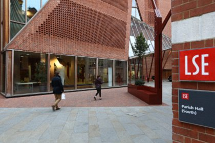
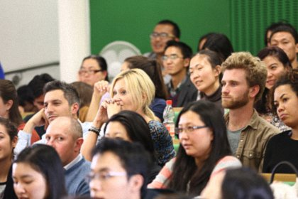
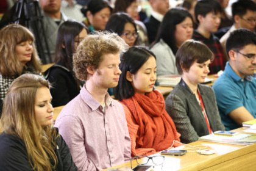

佛教如何看待幸福——英国伦敦政治经济学院演讲
『2015年10月20日』

主持人致辞：
大家晚上好！欢迎参加这次非同一般的活动。我是理查德·莱亚德，英国政经大学的经济学者，同时也研究和人类幸福相关的课题。在此，我非常荣幸地向大家介绍索达吉堪布仁波切，因为堪布是中国佛教界的领军人物，非常了不起。
堪布来自一所顶尖的佛教研究机构，并一直在那里研修佛法；他也是一位多产作家，著述涉及藏传佛教的各个领域；同时，堪布还是一位伟大的上师，拥有成千上万的弟子。迄今为止，堪布已在上百所大学进行了演讲，政经学院能够成为其中之一，我感到十分高兴。非常期待堪布今天的演讲。
本次演讲大约有45分钟。之后堪布会引导我们进行一个简短的禅修，相信会是一个很不错的环节。最后是观众提问，请提前准备好您的问题。希望这一个半小时能为您带来幸福！
很高兴能与这里的各位老师和同学们一起，就佛教如何看待幸福的话题进行交流。刚才我看到，你们学校有很多关于宗教的交流、讲座与修行，同时也有禅修的场所，这是非常有意义的。我个人认为，这个时代需要有一种开放的心态，在学习现代知识技术的同时，也要去了解古文化中的宗教思想。
佛教的政经观
首先，我想向各位简单介绍一下佛教经典中关于社会生活的一些观点。
可能有些人会认为，佛教是很古老的思想，无法跟上如今科技高度发达的现代脚步；有些人又认为，佛教思想只适合于极少数在寂静地闭门禅修的人，而对于整个东西方的都市在家人，却不一定适用。对于以上问题，我也一直在分析思考。
本来，我不是一名政治经济学的学者，从这个层面讲，我没有资格来政经学院交流。但因为我从事佛教研究的时间相对较长，所以，或许我可以用佛教的一些理念跟大家进行思想的碰撞。
佛教并不特别希求某种“实在”的幸福，而且，对于幸福的看法，佛教也持有各种观点和认知；并且在不同层面，也会有相应不同的解释。如果去研究这个来自于两千五百多年前的思想体系，就会非常有意思地发现，它完全可以适用于现代化的经济生活。
佛教有一部经典，叫《杂阿含经》。经中讲到，作为佛教人士，应先学习世间的知识和技术。即便没有条件学习，也应从事农、牧业，或掌握一些建筑类等技术；或是从事工商业，生产或经营各种产品。现在所谓的工业﹑农业﹑商业，《杂阿含经》里都提到了。
而且我认为，这部经典所讲的内容，也非常契合现代经济学。比如经中讲，赚来的钱，应分为四份使用：四分之一用于日常生活开支；四分之一用于储蓄；四分之一用于扶贫等慈善；四分之一用于投资生意等。而现在很多年轻人却爱走极端，要么将赚到的钱全部投资，要么吃喝玩乐恣意挥霍。比如，很多英国人和澳洲人，会把所有的钱拿去旅游；而很多中国人，则会把钱全部储存起来。这些行为，都不太符合以上提到的将钱财分为四份使用的佛教经济观。
还有一部叫《善生经》的佛经，详细描述了什么是佛教所认为的合理的社会生活。经中并没有要求佛教徒全都出家或者都去寂静地修行，而是倡导大家应该在城市中过一种正常的生活。这部经还讲述了夫妻、父母、兄弟、主仆、亲友之间，应该如何维持良好的关系。对如何处理人际关系和社会关系，做出了非常清晰的指导，值得大家去研究。
对于符合道德的政治生活，佛教也非常重视。相关经典中，阐述了很多关于平等、和平、非暴力的思想，以及如何让人民安居乐业，让国家兴盛发达的建议。这些经典包括：《金光明经》《仁王护国经》和《法华经》，这三部经典被称为“护国三经”。其中包含了很多治国的理念。比如，在世间方面，作为有德行、有慈悲心的国王和大臣，应该如何保护自己的民众；在出世间方面，如何通过祈祷消除世间灾难等等。以前很多修行人经常会念这些经，因为通过念诵的加持和威力，可以对国泰民安起到举足轻重的作用。以前，包括日本在内的许多国家，都非常重视这三部经。前段时间，我很想去叙利亚念《金光明经》的传承，但因为各种因缘，此计划暂时搁浅。

幸福禅
下面，我简单分析一下，我们应该怎样追求幸福。
大多数人可能认为：幸福来自于外在的物质，比如，高档的房屋、昂贵的轿车，或者用之不竭的财富等等。一旦拥有了丰厚优裕的物质生活，就等于拥有了幸福。但实情却事与愿违，首先，财富往往是不稳固的，从开始积财，中间守财，再到后来担心财富耗尽等等，在追求财富的同时，掺杂着许许多多的痛苦。其次，即使拥有了财富，也并不意味着自己拿到了幸福的通行证。
另一些人认为，感情是至高无上的，依靠伴侣、配偶及深爱之人，能获得无与伦比的快乐。表面上看，很多人也的确也从感情关系中品尝到了甜蜜。但如果以智慧来观察，依靠伴侣获得的快乐，一方面往往只是在青壮年时代比较鲜明，之前或之后的人生阶段，就难以有强烈的感受；另一方面，这种快乐所持续的时间也很短暂，若将其中的快乐和痛苦相比，大多是痛苦占了上风。
其实，依靠物质和感情来获得快乐，不是人类独有的行为，很多动物也有这两方面的追求，并且也能从中获得不同程度的安乐。
有些人将艺术作为自己的爱好，期望能依靠艺术来获取幸福。比如绘画、唱歌、跳舞，以及超越意识想象的各种美好等等，他们乐此不疲、陶醉其中。相对而言，在这些领域中获得快乐，需要的付出和伴随的痛苦都比较少。
有些人依靠世间的智慧来追求幸福。比如，某些大学教授或科学家，终其一生来研究某种学问，并将之视为快乐和享受。为了研究，甚至不谈婚论嫁，也不要求太多工资，甘愿为自己的专业付出一生的心血。
还有一些人，是通过做慈善事业来获得幸福。他们不顾自己的家庭和工作，一辈子做扶贫等利他之事，这是属于慈悲层面。
其实，不管是在慈悲还是智慧层面，如果发心清净，都会为整个社会和人类带来无与伦比的利益。
而更深层次的幸福，也许就只能从修行层面获得了。这里所谓的修行，实际上是指安住在自己的心性当中。比如现在人们常说的正念禅修，由它带来的幸福感，能够超越上述的全部类型。
为何禅修会有如此大的力量呢？因为在日常生活中，我们会产生各种各样的负面情绪，比如导致心理失衡的愤怒、贪婪、嫉妒，以及傲慢等。对人类来讲，当这些负面情绪一旦出现，即便物质再丰裕，生活也会变得一团糟糕、毫无头绪。所以，负面情绪对每个人的影响都非常大。
我认识的人很多，其中有一些是在藏地或山洞里面常年闭关禅修的人。如果审视他们的经济状况，饮食非常简单，穿着也破破烂烂，除此以外一无所有，但他们内心的幸福感却难以言喻。我也认识很多东西方国家的财多位高之人，但他们的幸福程度和修行人比起来，差距悬殊。
我倒是认为，每个人不论富有或贫穷，生活在何地，都可以享受自己本来就拥有的自性当中的幸福。实际上，当我们的心静下来时，各种各样的分别妄念全都会纷纷消于心性之中。此时，依靠这种平静和安住，我们的许多不合理的想法、不快乐的情绪和不正确的观念，统统都会被摒除。
快乐不必外求
我认为，很多人一心追求快乐，最终却事与愿违，是因为他们采用了向外求取的错误方法。当一个人不断外求时，就如同孩童追寻彩虹一般，无论怎样奔波，幸福反而离得越来越远；但如果能转向内求，则不管是什么身份，每个人都可以当下获得幸福与快乐。
以前，米开朗基罗在意大利准备创作《大卫》时，去市场考察，最终选定了一块可以作为原料的大石头。后来别人问米开朗基罗：“您是如何发现这块石头的？”他答道：“很简单，我去采石场，看见一块巨大的大理石，我在它身上看到了大卫。我要做的只是凿去多余的石头，去掉那些不该有的大理石，大卫就诞生了。”其实，这是一个很好的比喻，它告诉我们，幸福不需外求，只要能摆脱与我们不相关的，本不属于我们的负面情绪的限制，安住于自心，当下我们就能够找到真实、本来的自我。
前段时间我们去牛津大学时，有教授说：“现在牛津大学的学生中，大概有百分之三十六的人，担心自己有各类心理疾病，从而寻求过心理咨询的帮助。”所以，虽然总体而言，21世纪的人类，在物质生活方面应该算极大丰富了，可与此同时，精神方面却越来越糟糕，心理疾病愈发普遍和严重。
对于自己心理疾病的成因，有人说是压力过大，有人说是所在地的天气不好，有人说是人际关系问题，有人说是感情破裂……其实，在我看来，上述种种理由，根本不会对一位真正的修行人的心理造成危害和影响。现在人们非常担心的各种问题，禅修者们也能轻易面对，并不会成为他们的痛苦之因。
不过，现在的很多人的确非常忙碌。所以，我在家乡藏地的时候，写过一本书，叫《你在忙什么》。就我所观察，以前没有电话时，一个人只能与身边的亲友对话；后来，出现了有线电话，如果双方所在地都有电话线，那他们之间就可以通话；现在，又兴起了无线网络，发明了包括微博微信在内的各类通讯手段，这时，一个人就可以与全世界对话。但因为不同国家存在时差等原因，如果美国、北京的人都与我们联系，以一个人有限的精力，就难以应对了。我们的大脑容量是有限的，当各种信息纷至沓来、占据内心，就会使我们的正常思维模式超负荷运转，到最后，我们就可能变得不正常了。
有一种说法值得我们思考：“经济解决今天的问题，政治解决明天的问题，宗教解决未来的问题。”经济可以解决日常的诸多问题，为我们的生活带来便利；政治也许可以在更长时间内发挥作用，比如，世界上一些政治家的思想就流传了几百年；然而对于宗教，回溯过去，它已经有几千年历史，而且，未来它的思想仍会延续下去。所以，或许我们人类有必要用宗教来观察、约束自身的言行。

最后，按照教授的提议，我们将一起进行一个简单的正念禅修的练习，其内容主要是以心来观察自己的念头。希望你们可以将身心都平静下来，然后用心去看“到底我是什么样的”。在此过程中，当我们开始产生各种分别念时，就不断把心拉回到刚才的观察上。其实，随着这类禅修时间的增加，到一定时候，我们的生活会变得很有质量、很有品味。因为，世间的诸多烦恼和痛苦，是由于心的浮躁和焦虑所导致的；如果我们的心很清净，即使身在监狱或贫困之地，我们仍然会过得很开心，会变成一名乐观主义者。
禅修的时候，大家尽量平静下来，看着自己的心，观察各种起心动念。有些人可能会在此时认识自己的心。其实，当心真正静下来时，意识最深层的地方，就像大海的海底一样，才会显露出来，而它才是意识真正的本来面目；而平时让我们痛苦的各种负面情绪，则犹如海面上的波涛，并非自心的本来面目。所以，如果能经常性、习惯性地禅修，那你的快乐会与日俱增；你的生活品质和内在也会与众不同；其他人觉得非常痛苦之事，也根本不会引起你的焦虑。
下面，我们一起来禅修几分钟，在此期间，大家最好不要睡着……